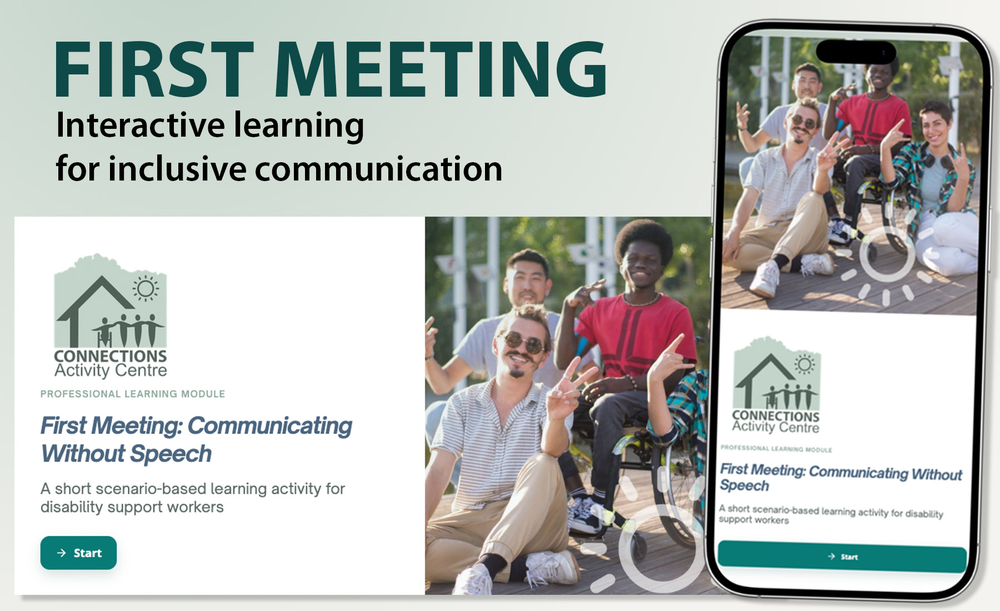
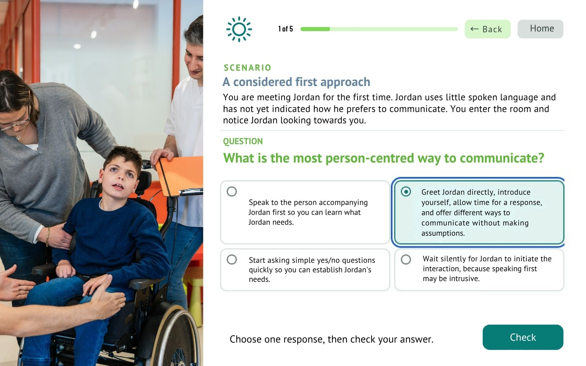
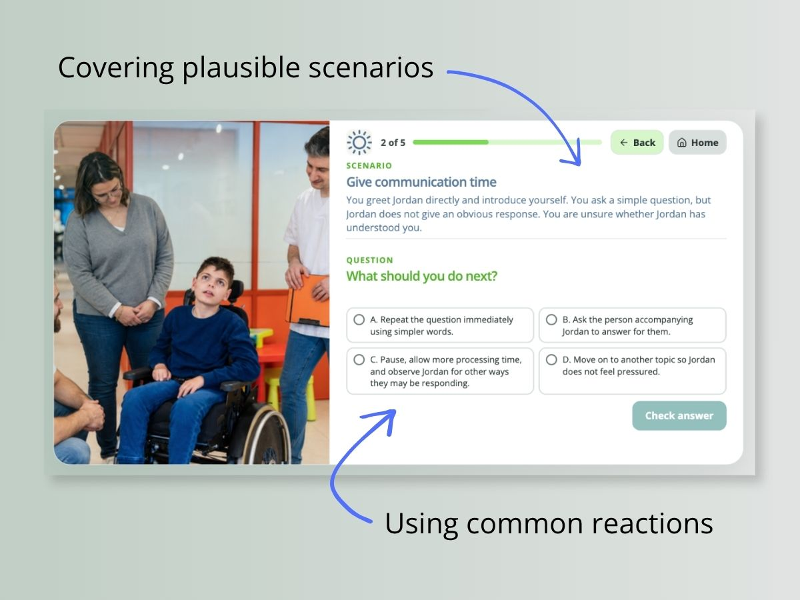
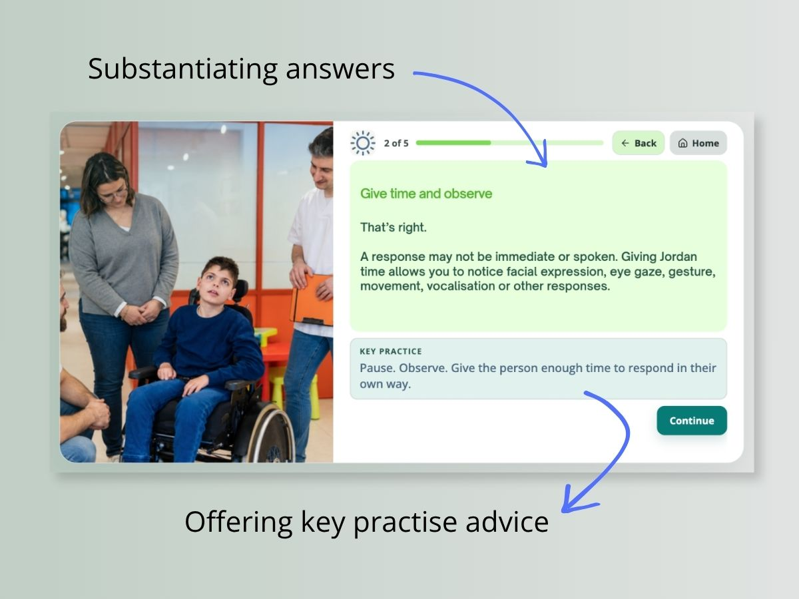
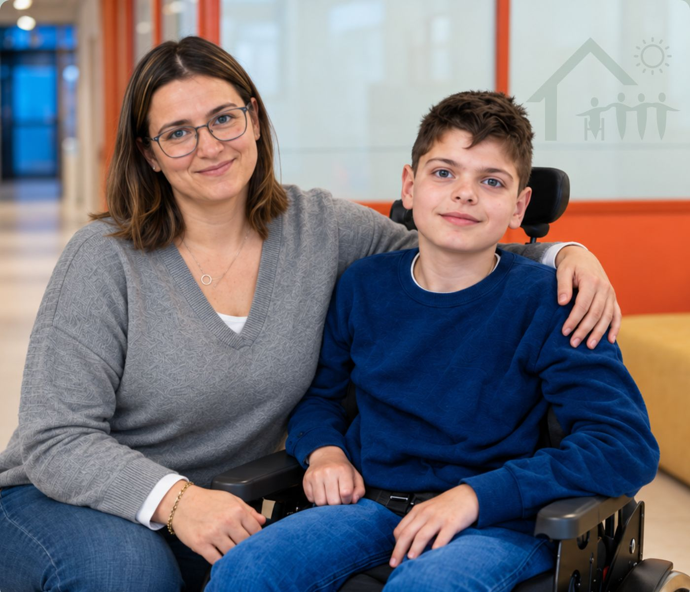

INTERACTIVE LEARNING · INCLUSIVE COMMUNICATION
First
Meeting
A learning experience exploring how we approach a first meeting with a person who uses little or no verbal language.

PROJECT OVERVIEW
Communication starts before anyone speaks.
First Meeting
Inclusive communication
Disability support workers
Interactive digital learning
Concept, learning design & visual design
Canva · AI-assisted visual development
THE CHALLENGE
A first meeting can shape everything that follows.
When someone communicates differently, it can be tempting to focus immediately on what they cannot say rather than on how they communicate.
The project explores the first moments of meeting a person who uses little or no verbal language. The learning challenge is deliberately practical: what should a support worker notice, how should they approach the interaction, and what assumptions should they avoid?
Rather than presenting a long list of communication rules, the activity places the learner inside a recognisable situation and asks them to make choices.

THE APPROACH
Put the learner into the situation.
The activity is built around observation, judgement and consequence rather than simply presenting information.
Learners encounter a first-meeting scenario, consider several possible responses and receive immediate feedback explaining why a choice may help or hinder communication.
The aim is to make the learner pause and think about the person in front of them rather than simply remembering a prescribed response.

01 — Scenario and decision point

02 — Response and learning feedback
DESIGN PROCESS
From real-world interaction to learning experience.
Observe
Start with the real communication situation and identify what matters.
Define
Identify the behaviour, decision or understanding the learning should influence.
Design
Turn the situation into choices, consequences and useful feedback.
Visualise
Use character, layout and visual hierarchy to reduce unnecessary cognitive load.
Refine
Simplify the interaction until the learning point is clear.

VISUAL DESIGN
Keep the interface quiet. Keep the person central.
The visual system intentionally avoids unnecessary decoration. Character imagery and body language carry much of the communication, supported by short pieces of instructional text.
Consistent layouts, restrained colour and clear navigation allow the learner to concentrate on the interaction rather than the interface.
LEARNING PRINCIPLES
Person first
Communication begins with curiosity about the individual rather than assumptions about disability.
Observe
Expression, gesture, movement, pace and response can all carry meaning.
Give time
Silence does not necessarily mean that communication has stopped.
Respond
Good communication is an interaction, not a test of the other person's ability.
THE OUTCOME
A small learning experience built around a bigger idea: communication belongs to everyone.
First Meeting demonstrates how practical disability experience, visual communication and interactive learning design can be combined into a focused digital learning experience.